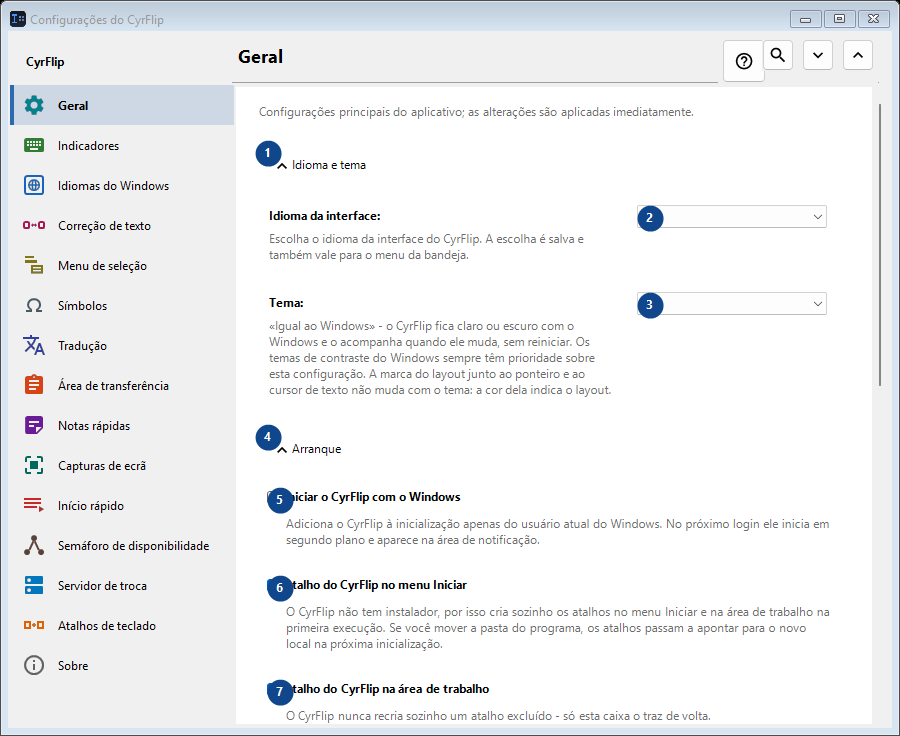
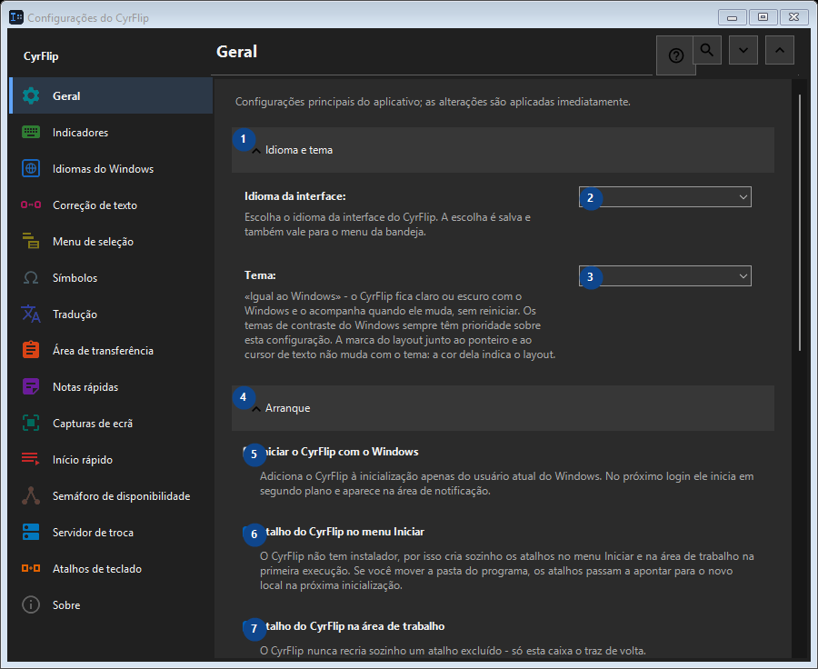

Geral
Para que serve
Configurações principais do aplicativo; as alterações são aplicadas imediatamente.


Ordem de utilização
As definições são aplicadas de imediato. Não existe uma ordem obrigatória; use os grupos abaixo.
Elementos
1. Idioma e tema
Use este comando para a ação indicada. Leia qualquer confirmação antes de aceitar.
Os seus atalhos2. Idioma da interface
Escolha ou introduza o valor da etiqueta adjacente. Verifique-o antes de continuar.
Os seus atalhos3. Tema
Escolha ou introduza o valor da etiqueta adjacente. Verifique-o antes de continuar.
Os seus atalhos4. Arranque
Use este comando para a ação indicada. Leia qualquer confirmação antes de aceitar.
Os seus atalhos5. Iniciar o CyrFlip com o Windows
Adiciona o CyrFlip à inicialização apenas do usuário atual do Windows. No próximo login ele inicia em segundo plano e aparece na área de notificação.
Os seus atalhos6. Atalho do CyrFlip no menu Iniciar
O CyrFlip não tem instalador, por isso cria sozinho os atalhos no menu Iniciar e na área de trabalho na primeira execução. Se você mover a pasta do programa, os atalhos passam a apontar para o novo local na próxima inicialização.
Os seus atalhos7. Atalho do CyrFlip na área de trabalho
O CyrFlip nunca recria sozinho um atalho excluído - só esta caixa o traz de volta.
Os seus atalhos8. Energia e ecrã
Use este comando para a ação indicada. Leia qualquer confirmação antes de aceitar.
Os seus atalhos9. Impedir que o computador durma
Enquanto ativado, o Windows não entra em suspensão ou hibernação por inatividade — útil para downloads, cópias ou renderizações longas. O estado é salvo: um botão deixado ligado mantém o computador acordado também depois de reiniciar - o CyrFlip não vai cuidar da sua bateria por você.
Os seus atalhos10. Manter a tela ligada (como em vídeo)
A tela não desliga nem bloqueia por inatividade, como ao assistir a um vídeo. Isso não anula o bloqueio por senha (Win+L ou uma política de segurança). O estado é salvo: um botão deixado ligado mantém a tela ligada também depois de reiniciar.
Os seus atalhos11. Transferir configurações
Use este comando para a ação indicada. Leia qualquer confirmação antes de aceitar.
Os seus atalhos12. Exportar configurações...
Use este comando para a ação indicada. Leia qualquer confirmação antes de aceitar.
Os seus atalhos13. Importar configurações...
Use este comando para a ação indicada. Leia qualquer confirmação antes de aceitar.
Os seus atalhos14. Restaurar configurações anteriores...
Ainda não há nada para restaurar: o CyrFlip guarda o estado original logo antes da primeira alteração. Este elemento não está disponível. Ative primeiro a função ou selecione uma entrada.
Os seus atalhos15. Manter uma cópia de segurança das configurações em Documentos
Enquanto ativo, o CyrFlip mantém uma cópia de segurança contínua de cada configuração em Documents\CyrFlip\Backups - as três mais recentes são mantidas. A cópia sobrevive a uma reinstalação pela Microsoft Store: uma instalação nova a encontra e oferece restaurá-la. O arquivo contém seus hosts, sites e cenários - mantenha-o privado.
Os seus atalhos16. Abrir a pasta de cópias de segurança
As cópias são arquivos de configurações comuns, nomeados por data. Abra a pasta para copiar uma ou levá-la a outro computador.
Os seus atalhos